번역 안내. 클래스·스킬·탤런트 이름 등 고유명사는 인게임 검색을 위해 영어 그대로 두었고, 설명만 한글로 옮겼습니다.
이 Hunter 빌드 가이드는 Archer 서브클래스의 전투 및 트래핑(Trapping, 덫으로 크리처 포획) 탤런트 템플릿을 제공합니다. Hunter의 Eagle Eye 탤런트는 다른 캐릭터 대신 덫을 회수할 수 있게 해주며, Looty Mc Shooty 탤런트로 지금까지 발견한 Idleon 아이템 수에 따라 데미지가 증가하는 것도 핵심적인 특징입니다.
이 페이지는 전투와 트래핑 양쪽의 탤런트 우선순위와 각 탤런트의 상세 정보를 담고 있으며, Archer 탤런트 빌드 페이지와 함께 활용해야 합니다.
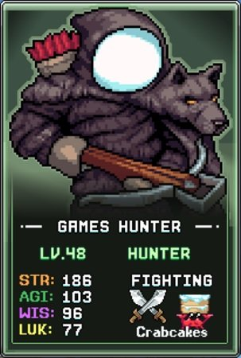
전투(Damage) 빌드
추천 탤런트 우선순위:
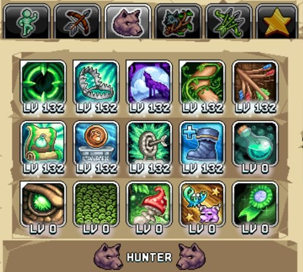
| 탤런트 | 효과 | 설명 |
|---|---|---|
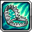 Bear Trap |
데미지를 주는 곰 덫 여러 개를 설치 | Bear Trap과 360 Noscope처럼 공격 바에 배치하는 Active(직접 플레이) 공격 스킬은 AFK 수익과 Active 전투 수익 모두를 향상시킵니다. 두 스킬 모두 초반 50포인트를 권장하고, 이후 다른 전투 탤런트를 모두 확보한 후 맥스하세요. |
| 360 Noscope | 플레이어 앞의 적에게 데미지 | 위와 동일하게 초반 50포인트 후 나머지 탤런트들을 확보한 뒤 맥스하세요. |
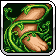 Stop Right There |
몬스터를 속박 | World 3 타워 디펜스 미니게임에서 모든 몬스터를 잠시 멈출 수 있어 최소 1포인트 투자를 권장합니다. 레벨마다 범위와 속박 시간이 늘어나므로 더 높은 웨이브를 노린다면 추가 투자도 유효하지만 데미지 탤런트를 희생해야 합니다. 필요에 따라 탤런트를 리셋하거나 스킬링 프리셋에서 타워 디펜스용으로 맥스하세요. |
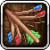 Have Another… Again! |
기본 공격이 두 번 타격할 확률 +% | Archer 기본기에 추가되는 다중 공격 탤런트입니다. 레벨 30(약 50% 확률)이 체감 효과가 좋은 초기 목표점으로, 이후 수익이 감소하기 때문입니다. Active 플레이와 AFK 모두에 도움을 줍니다. 다른 전투 탤런트 모두 확보 후 나중에 맥스하세요. |
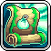 Looty Mc Shooty |
모든 캐릭터에서 발견한 아이템 50개마다 +% 데미지 | Hunter의 주요 데미지 탤런트로, 발견한 아이템 수가 늘수록 강해집니다. World 5에는 Slab이라는 유사한 메커니즘이 있어 미발견 아이템 목록을 확인할 수 있습니다. |
 AGI Again AGI Again |
Quickness Boots 최대 탤런트 레벨 + | Archer 탭의 Quickness Boots에 추가 포인트를 허용해 민첩(AGI)을 높여 주는 또 다른 데미지 원천입니다. |
 Previous Points Previous Points |
Archer 탤런트 탭 포인트 + | AGI Again과 다른 Archer 탤런트를 활용하려면 추가 Archer 탤런트 포인트가 필요합니다. |
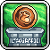 Shoeful Of Obol |
Obols가 +% 더 많은 AGI 제공 | Obols에서 약간의 민첩을 추가하는 탤런트로, 작은 데미지 부스트입니다. |
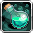 Visibility Vessels |
Archer or Bust 버블 레벨마다 I See You 최대 레벨 증가 | World 2 연금술 진행이 필요하며, Archer 탤런트 탭의 I See You(Crit 확률 제공)의 최대 레벨을 올려 소폭의 데미지를 더합니다. |
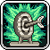 Straightshot Statues |
Speed, Anvil, Bullseye 조각상이 +% 더 큰 보너스를 제공 | Bullseye 조각상(Accuracy(명중률) 제공)을 강화해 일부 보스전에서 도움이 됩니다. 또한 Speed 조각상도 부스트되며, 이동 속도에 따라 기본 데미지를 높이는 연금술 버블 Quick Slap(초록 솥)이 있어 데미지 기여도 있습니다. |
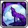 Uwu Rawrrr |
몬스터 사망 시 더 빨리 리스폰 | Idleon에서 최초로 등장하는 리스폰 메커니즘으로 몬스터 공백 시간을 줄일 수 있습니다. 단, Wind Walker로 클래스가 승급되기 전까지는 효과가 비교적 약합니다. |
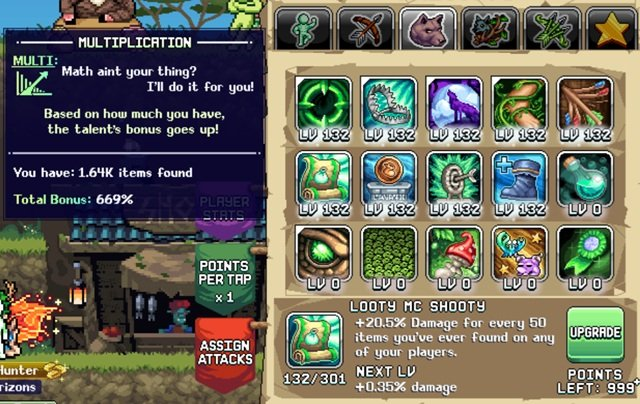
트래핑(Trapping) 빌드
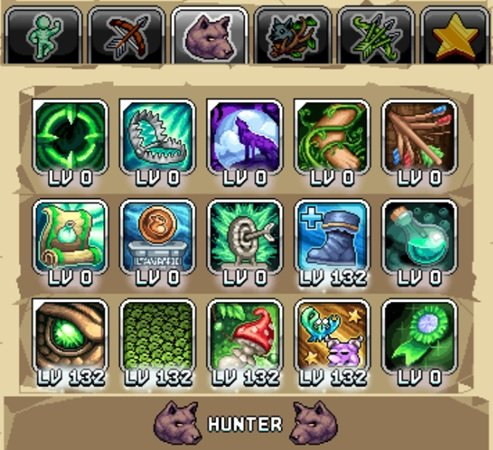
트래핑은 다양한 월드 장소에 덫을 설치해 일반 및 반짝이(Shiny) 크리처를 얻는 World 3 스킬입니다. Hunter 트래핑 빌드는 두 번째 탤런트 프리셋에 배치하되, Archer 탤런트 탭 1의 Elusive Efficiency를 함께 포함하세요. 이 탤런트는 트래핑 스킬 효율에 큰 영향을 줍니다.
트래핑 빌드에서 다른 Hunter 탤런트의 우선순위는 다음과 같습니다.
| 탤런트 | 효과 | 설명 |
|---|---|---|
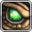 Eagle Eye |
다른 캐릭터의 덫을 대신 회수하되 크리처 및 경험치 감소 | 트래핑 빌드의 핵심으로, 덫 회수를 매우 편리하게 해줍니다. 크리처와 경험치에 패널티가 있지만 시간을 크게 절약할 수 있습니다. 패널티를 최소화하기 위해 가장 먼저 맥스하세요. 이후 World 4 메커니즘이 덫을 자동으로 회수하게 되면 대체됩니다. |
| Invasive Species | 보관함의 Froge 10의 거듭제곱당 트래핑 효율 증가 | 트래핑 효율을 높여 해당 크리처의 임계값을 넘으면 보너스 크리처를 줍니다. Froge를 1,000~10,000마리 정도 파밍하면 좋은 초기 목표가 됩니다. |
| Shroom Bait | +% 트래핑 경험치 획득 | 더 높은 트래핑 장비를 해금하는 데 필요하며, 위 두 탤런트 다음으로 좋은 트래핑 탤런트입니다. |
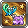 Reflective Eyesight |
트래핑 10레벨마다 반짝이 크리처 확률 배수 증가 | 반짝이 크리처는 Lord of The Hunt NPC 퀘스트에 필요해 초반에 매력적인 탤런트처럼 보입니다. 그러나 트래핑 레벨 10에 도달하면 반짝이 배율이 높은 Silkskin Traps를 제작할 수 있으므로, 위 탤런트들을 먼저 맥스한 뒤 투자하는 것이 좋습니다. 반짝이 크리처는 다양한 용도가 있으므로 결국 투자할 가치는 있습니다. |
| AGI Again |
Quickness Boots 최대 탤런트 레벨 + | 핵심 트래핑 탤런트를 모두 확보한 뒤 이 민첩 원천이 트래핑 효율에 소폭 기여합니다. |